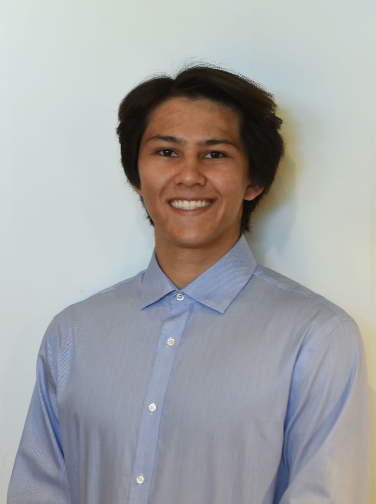

Studies differentiable potential-flow aerodynamics and multidisciplinary aircraft design, including blended-wing-body aircraft and electric motors.
Education
- PhD, Mechanical and Aerospace Engineering
UC San Diego · 2021–present - BS, Aerospace Engineering, minor in Mathematics
UC San Diego · 2021
Research connections
Related to Luca Scotzniovsky
Methods
Papers
- Marius L. Ruh, Michael A. P. Warner, Luca Scotzniovsky, Andrew H. Fletcher, Mark Z. Sperry, John T. Hwang. System-Level, Large-Scale Multidisciplinary Design Optimization of an Air Taxi Concept. Journal of Aircraft, 2026.DOIPDF
@article{ruh2026system, author = {Marius L. Ruh and Michael A. P. Warner and Luca Scotzniovsky and Andrew H. Fletcher and Mark Z. Sperry and John T. Hwang}, title = {System-Level, Large-Scale Multidisciplinary Design Optimization of an Air Taxi Concept}, journal = {Journal of Aircraft}, year = {2026}, pages = {1-24}, doi = {10.2514/1.c038533}, url = {https://doi.org/10.2514/1.c038533}, note = {Metadata verification: Crossref DOI} } - Luca Scotzniovsky, Nicholas C. Orndorff, Andrew H. Fletcher, Jason Kao, John T. Hwang. Large-Scale Multidisciplinary Design Optimization of a Blended Wing Body Aircraft Using Mid-Fidelity, Multi-Point Analysis. AIAA AVIATION 2026 Forum, 2026. Distribution Statement A: Approved for public release; distribution is unlimited. PA# AFRL-2026-2042DOIPDF
@inproceedings{scotzniovsky2026large, author = {Luca Scotzniovsky and Nicholas C. Orndorff and Andrew H. Fletcher and Jason Kao and John T. Hwang}, title = {Large-Scale Multidisciplinary Design Optimization of a Blended Wing Body Aircraft Using Mid-Fidelity, Multi-Point Analysis}, booktitle = {AIAA AVIATION 2026 Forum}, year = {2026}, doi = {10.2514/6.2026-4247}, url = {https://doi.org/10.2514/6.2026-4247}, note = {Metadata verification: Crossref title} } - Luca Scotzniovsky, John T. Hwang. VortexAD: A Graph-Based Linear Potential Flow Analysis Framework for Large-Scale MDO. AIAA AVIATION 2026 Forum, AIAA 2026-4642, 2026.PDF
@inproceedings{scotzniovsky2026vortexad, author = {Luca Scotzniovsky and John T. Hwang}, title = {VortexAD: A Graph-Based Linear Potential Flow Analysis Framework for Large-Scale MDO}, booktitle = {AIAA AVIATION 2026 Forum, AIAA 2026-4642}, year = {2026}, note = {Metadata verification: Crossref unavailable: HTTPError} } - Andrew Fletcher, Ru Xiang, Luca Scotzniovsky, Jacobo Cervera-Torralba, Michael T. Tolley, John T. Hwang. Multidisciplinary Control Co-Design Optimization of Anguilliform-Swimming Soft Fluidic Robots. IEEE International Conference on Soft Robotics (RoboSoft), 2025, 2025.PDF
@inproceedings{fletcher2025multidisciplinary, author = {Andrew Fletcher and Ru Xiang and Luca Scotzniovsky and Jacobo Cervera-Torralba and Michael T. Tolley and John T. Hwang}, title = {Multidisciplinary Control Co-Design Optimization of Anguilliform-Swimming Soft Fluidic Robots}, booktitle = {IEEE International Conference on Soft Robotics (RoboSoft)}, year = {2025} } - Luca Scotzniovsky, John T. Hwang. A Fast, Memory-Efficient Panel Method for Large-Scale Multidisciplinary Design Optimization Under Uncertainty Using Graph-Based Modeling. AIAA AVIATION 2025 Forum, 2025.PDF
@inproceedings{scotzniovsky2025fast, author = {Luca Scotzniovsky and John T. Hwang}, title = {A Fast, Memory-Efficient Panel Method for Large-Scale Multidisciplinary Design Optimization Under Uncertainty Using Graph-Based Modeling}, booktitle = {AIAA AVIATION 2025 Forum}, year = {2025} } - Luca Scotzniovsky, Ru Xiang, Zeyu Cheng, Gabriel Rodriguez, David Kamensky, Chris Mi, John T. Hwang. Geometric design of electric motors using adjoint-based shape optimization. Optimization and Engineering, 2025.DOIPDF
@article{scotzniovsky2025geometric, author = {Luca Scotzniovsky and Ru Xiang and Zeyu Cheng and Gabriel Rodriguez and David Kamensky and Chris Mi and John T. Hwang}, title = {Geometric design of electric motors using adjoint-based shape optimization}, journal = {Optimization and Engineering}, year = {2025}, volume = {26}, number = {1}, pages = {121-158}, doi = {10.1007/s11081-024-09892-6}, url = {https://doi.org/10.1007/s11081-024-09892-6}, note = {Metadata verification: Crossref DOI} } - Sebastiaan P. van Schie, Marius L. Ruh, Andrew H. Fletcher, Michael Warner, Mark Sperry, Luca Scotzniovsky, Nicholas C. Orndorff, Ru Xiang, Jiayao Yan, Han Zhao, Joshua Krokowski, Jiun-Shyan Chen, Darshan Sarojini, Hyunjune Gill, Seongkyu Lee, Andrew C. Tagg, Ryan Anderson, Eric Green, Cibin Joseph, Andrew Ning, Zeyu Cheng, Zhi Cao, Chunting Mi, Alexandre T. Guibert, Ashley Cronk, Alicia A. Kim, Shirley Meng, Christopher Silva, John T. Hwang. Large-Scale Distributed Multidisciplinary Design Optimization of the NASA Lift-Plus-Cruise Air Taxi Concept. AIAA SCITECH 2025 Forum, 2025.DOIPDF
@inproceedings{vanschie2025large, author = {Sebastiaan P. van Schie and Marius L. Ruh and Andrew H. Fletcher and Michael Warner and Mark Sperry and Luca Scotzniovsky and Nicholas C. Orndorff and Ru Xiang and Jiayao Yan and Han Zhao and Joshua Krokowski and Jiun-Shyan Chen and Darshan Sarojini and Hyunjune Gill and Seongkyu Lee and Andrew C. Tagg and Ryan Anderson and Eric Green and Cibin Joseph and Andrew Ning and Zeyu Cheng and Zhi Cao and Chunting Mi and Alexandre T. Guibert and Ashley Cronk and Alicia A. Kim and Shirley Meng and Christopher Silva and John T. Hwang}, title = {Large-Scale Distributed Multidisciplinary Design Optimization of the NASA Lift-Plus-Cruise Air Taxi Concept}, booktitle = {AIAA SCITECH 2025 Forum}, year = {2025}, doi = {10.2514/6.2025-0362}, url = {https://doi.org/10.2514/6.2025-0362}, note = {Metadata verification: Crossref title} } - Bingran Wang, Michael Warner, Aoran Tian, Luca Scotzniovsky, John T. Hwang. A comparative study of uncertainty quantification methods in gust response analysis of a Lift-Plus-Cruise eVTOL aircraft wing. AIAA SCITECH 2025 Forum, 2025.DOIPDF
@inproceedings{wang2025comparative, author = {Bingran Wang and Michael Warner and Aoran Tian and Luca Scotzniovsky and John T. Hwang}, title = {A comparative study of uncertainty quantification methods in gust response analysis of a Lift-Plus-Cruise eVTOL aircraft wing}, booktitle = {AIAA SCITECH 2025 Forum}, year = {2025}, doi = {10.2514/6.2025-2819}, url = {https://doi.org/10.2514/6.2025-2819}, note = {Metadata verification: Crossref title} } - Bingran Wang, Marius L. Ruh, Aoran Tian, Luca Scotzniovsky, John T. Hwang. Large-scale MDO under uncertainty of an eVTOL aircraft using dimension reduction via global sensitivity analysis. AIAA AVIATION FORUM AND ASCEND 2025, 2025.DOIPDF
@inproceedings{wang2025large, author = {Bingran Wang and Marius L. Ruh and Aoran Tian and Luca Scotzniovsky and John T. Hwang}, title = {Large-scale MDO under uncertainty of an eVTOL aircraft using dimension reduction via global sensitivity analysis}, booktitle = {AIAA AVIATION FORUM AND ASCEND 2025}, year = {2025}, doi = {10.2514/6.2025-3344}, url = {https://doi.org/10.2514/6.2025-3344}, note = {Metadata verification: Crossref title} } - Marius L. Ruh, Andrew Fletcher, Darshan Sarojini, Mark Sperry, Jiayao Yan, Luca Scotzniovsky, Sebastiaan P. van Schie, Michael Warner, Nicholas C. Orndorff, Ru Xiang, Anugrah J. Joshy, Han Zhao, Joshua Krokowski, Hyunjune Gill, Seongkyu Lee, Zeyu Cheng, Zhi Cao, Chris Mi, Christopher Silva, Lauren Wolfe, Jiun-Shyan Chen, John T. Hwang. Large-scale multidisciplinary design optimization of a NASA air taxi concept using a comprehensive physics-based system model. AIAA SCITECH 2024 Forum, 2024.DOIPDF
@inproceedings{ruh2024large, author = {Marius L. Ruh and Andrew Fletcher and Darshan Sarojini and Mark Sperry and Jiayao Yan and Luca Scotzniovsky and Sebastiaan P. van Schie and Michael Warner and Nicholas C. Orndorff and Ru Xiang and Anugrah J. Joshy and Han Zhao and Joshua Krokowski and Hyunjune Gill and Seongkyu Lee and Zeyu Cheng and Zhi Cao and Chris Mi and Christopher Silva and Lauren Wolfe and Jiun-Shyan Chen and John T. Hwang}, title = {Large-scale multidisciplinary design optimization of a NASA air taxi concept using a comprehensive physics-based system model}, booktitle = {AIAA SCITECH 2024 Forum}, year = {2024}, doi = {10.2514/6.2024-0771}, url = {https://doi.org/10.2514/6.2024-0771}, note = {Metadata verification: Crossref DOI} } - Darshan Sarojini, Marius Ruh, Jiayao Yan, Luca Scotzniovsky, Nicholas C. Orndorff, Ru Xiang, Han Zhao, Joshua Krokowski, Michael Warner, Sebastiaan van Schie, Ashley Cronk, Alexandre T. Guibert, Jeffrey T. Chambers, Lauren Wolfe, Rachel Doring, Robin Despins, Cibin Joseph, Ryan Anderson, Andrew Ning, Hyunjune Gill, Seongkyu Lee, Zeyu Cheng, Zhi Cao, Chris Mi, Ying Shirley Meng, Christopher Silva, Jiun-Shyan Chen, Alicia A. Kim, John T. Hwang. Review of Computational Models for Large-Scale MDAO of Urban Air Mobility Concepts. AIAA SCITECH 2024 Forum, 2024.DOIPDF
@inproceedings{sarojini2024review, author = {Darshan Sarojini and Marius Ruh and Jiayao Yan and Luca Scotzniovsky and Nicholas C. Orndorff and Ru Xiang and Han Zhao and Joshua Krokowski and Michael Warner and Sebastiaan van Schie and Ashley Cronk and Alexandre T. Guibert and Jeffrey T. Chambers and Lauren Wolfe and Rachel Doring and Robin Despins and Cibin Joseph and Ryan Anderson and Andrew Ning and Hyunjune Gill and Seongkyu Lee and Zeyu Cheng and Zhi Cao and Chris Mi and Ying Shirley Meng and Christopher Silva and Jiun-Shyan Chen and Alicia A. Kim and John T. Hwang}, title = {Review of Computational Models for Large-Scale MDAO of Urban Air Mobility Concepts}, booktitle = {AIAA SCITECH 2024 Forum}, year = {2024}, doi = {10.2514/6.2024-0377}, url = {https://doi.org/10.2514/6.2024-0377}, note = {Metadata verification: Crossref DOI} } - Ru Xiang, Sebastiaan P. C. van Schie, Luca Scotzniovsky, Jiayao Yan, David Kamensky, John T. Hwang. Automating adjoint sensitivity analysis for multidisciplinary models involving partial differential equations. Structural and Multidisciplinary Optimization (in press 2024, per CV), 2024.DOIPDF
@article{xiang2024automating, author = {Ru Xiang and Sebastiaan P. C. van Schie and Luca Scotzniovsky and Jiayao Yan and David Kamensky and John T. Hwang}, title = {Automating adjoint sensitivity analysis for multidisciplinary models involving partial differential equations}, journal = {Structural and Multidisciplinary Optimization (in press 2024, per CV)}, year = {2024}, doi = {10.21203/rs.3.rs-4265983/v1}, url = {https://doi.org/10.21203/rs.3.rs-4265983/v1}, note = {Metadata verification: Crossref title} } - Zeyu Cheng, Shuofeng Zhao, Luca Scotzniovsky, Gabriel Rodriguez, Chris Mi, John T. Hwang. A Differentiable Method for Low-Fidelity Analysis of Permanent-Magnet Synchronous Motors. AIAA SciTech 2023 Forum, 2023.PDF
@inproceedings{cheng2023differentiable, author = {Zeyu Cheng and Shuofeng Zhao and Luca Scotzniovsky and Gabriel Rodriguez and Chris Mi and John T. Hwang}, title = {A Differentiable Method for Low-Fidelity Analysis of Permanent-Magnet Synchronous Motors}, booktitle = {AIAA SciTech 2023 Forum}, year = {2023}, note = {Metadata verification: Crossref unavailable: HTTPError} } - Nicholas C. Orndorff, Darshan Sarojini, Luca Scotzniovsky, Hyunjune Gill, Seongkyu Lee, Zeyu Cheng, Shuofeng Zhao, Chris Mi, John T. Hwang. Air-taxi transition trajectory optimization with physics-based models. AIAA SCITECH 2023 Forum, 2023.DOIPDF
@inproceedings{orndorff2023air, author = {Nicholas C. Orndorff and Darshan Sarojini and Luca Scotzniovsky and Hyunjune Gill and Seongkyu Lee and Zeyu Cheng and Shuofeng Zhao and Chris Mi and John T. Hwang}, title = {Air-taxi transition trajectory optimization with physics-based models}, booktitle = {AIAA SCITECH 2023 Forum}, year = {2023}, doi = {10.2514/6.2023-0324}, url = {https://doi.org/10.2514/6.2023-0324}, note = {Metadata verification: Crossref title} } - Darshan Sarojini, Marius L. Ruh, Mark Sperry, Jiayao Yan, Andrew Fletcher, Anugrah Jo Joshy, Luca Scotzniovsky, Alexander Ivanov, Nicholas Orndorff, Victor Gandarillas, Isaac Asher, Jeff Chambers, Hyunjune Gill, Seongkyu Lee, Zeyu Cheng, Gabriel Rodriguez, Shuofeng Zhao, Chunting Mi, Thomas Nascenzi, Timothy Cuatt, Tyler Winter, Alexandre Guibert, Ashley Cronk, Alicia Kim, Shirley Meng, John T. Hwang. Large-Scale Multidisciplinary Design Optimization of an eVTOL Aircraft Using Comprehensive Analysis. AIAA SciTech 2023 Forum, 2023.PDF
@inproceedings{sarojini2023large, author = {Darshan Sarojini and Marius L. Ruh and Mark Sperry and Jiayao Yan and Andrew Fletcher and Anugrah Jo Joshy and Luca Scotzniovsky and Alexander Ivanov and Nicholas Orndorff and Victor Gandarillas and Isaac Asher and Jeff Chambers and Hyunjune Gill and Seongkyu Lee and Zeyu Cheng and Gabriel Rodriguez and Shuofeng Zhao and Chunting Mi and Thomas Nascenzi and Timothy Cuatt and Tyler Winter and Alexandre Guibert and Ashley Cronk and Alicia Kim and Shirley Meng and John T. Hwang}, title = {Large-Scale Multidisciplinary Design Optimization of an eVTOL Aircraft Using Comprehensive Analysis}, booktitle = {AIAA SciTech 2023 Forum}, year = {2023}, note = {Metadata verification: Crossref unavailable: HTTPError; numeric collision guard applied} }